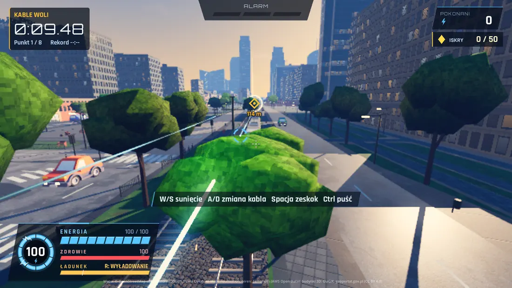
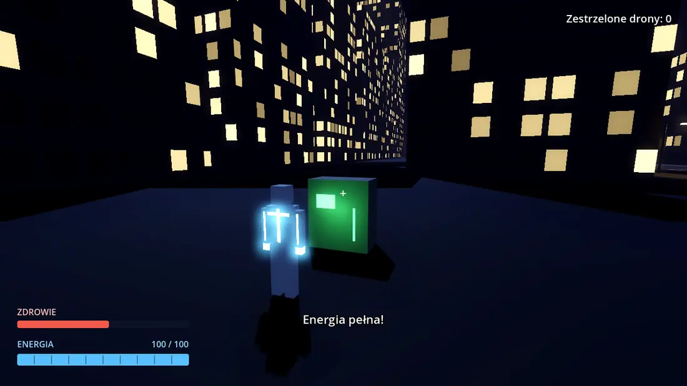
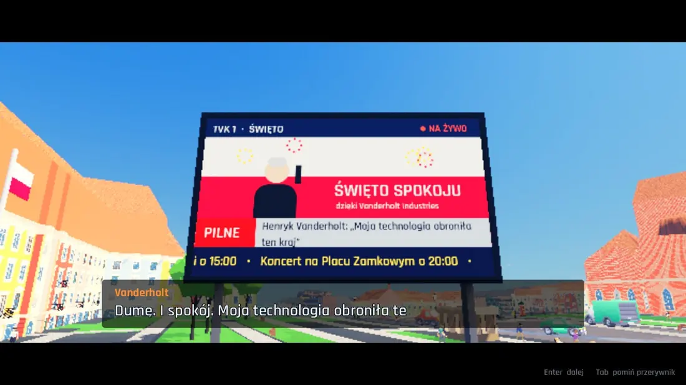
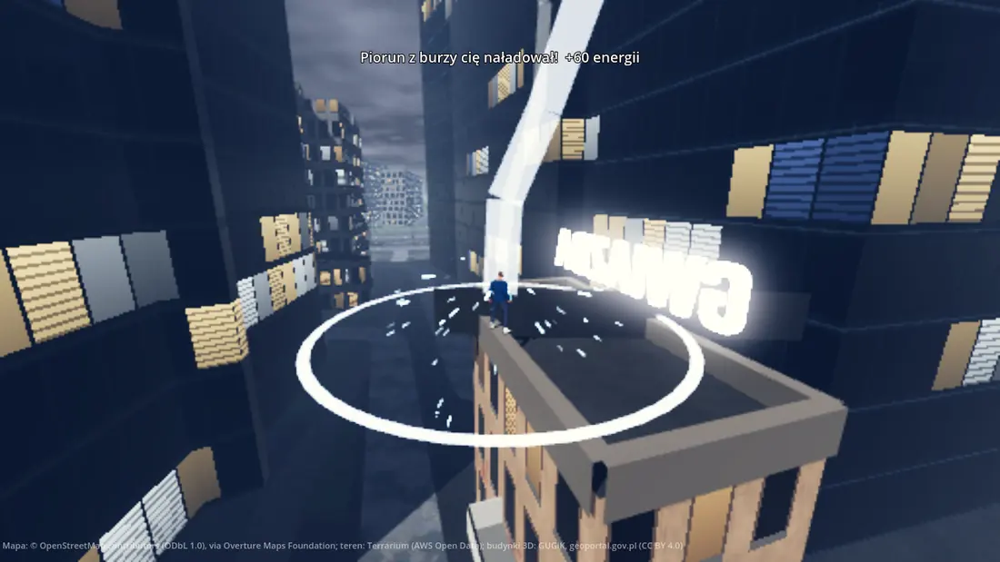
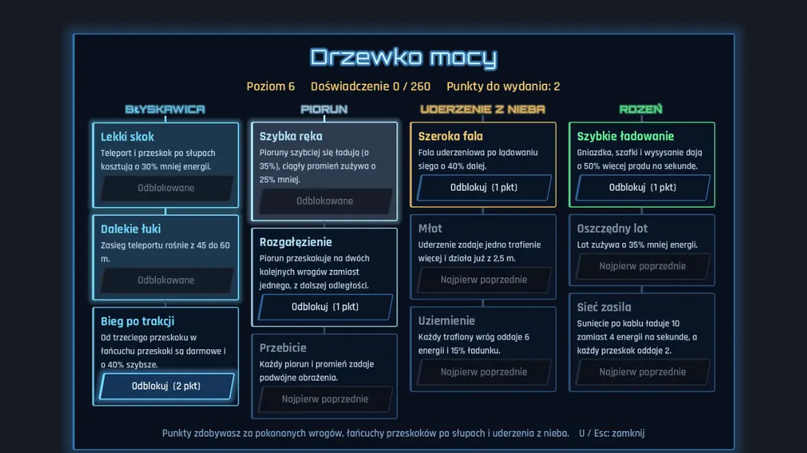
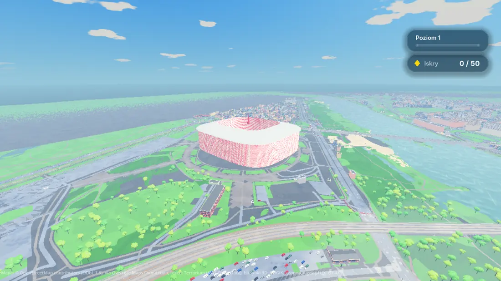

Przeskok po liniachZamieniasz się w prąd i lecisz trakcją tramwajową, latarniami i liniami energetycznymi.
Niezależne studio gier
Milklosh studio robi gry o ruchu. W Socketborn przeskakujesz po liniach energetycznych nad Warszawą, w Barierce biegniesz po autostradowej barierce, zanim spadnie zmrok.
Gra w produkcji
Zamień ciało w prąd. Miasto jest Twoją siecią.
Karola trafia piorun. Budzi się w szpitalu, w którym skalpel nie przecina mu skóry, a lampy na sali ładują go jak baterię.
Kilka minut później cały kraj szuka potwora, a miliarder Henryk Vanderholt wypuszcza na miasto swoje drony bojowe. Karol musi nauczyć się własnej mocy, zanim ktoś zrobi z niej broń.






Ulice, budynki i teren pochodzą z otwartych danych o mieście. Przelatujesz nad tymi samymi dachami, które widać z okna.
Za kulisami
Nowe moce, poprawki miasta i wpadki z testów lądują najpierw na TikToku. Tam widać, jak Socketborn rośnie z tygodnia na tydzień.
@milklosh.studio na TikTokuStudio
Milklosh studio to jednoosobowe, niezależne studio gier. Każdą grę projektuję, programuję i testuję sam. Socketborn trafi na itch.io, kiedy będzie gotowy, a w Barierkę możesz zagrać już teraz.